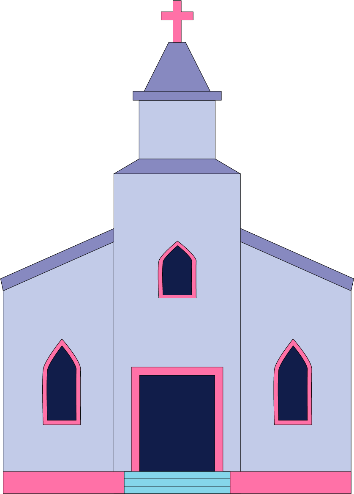
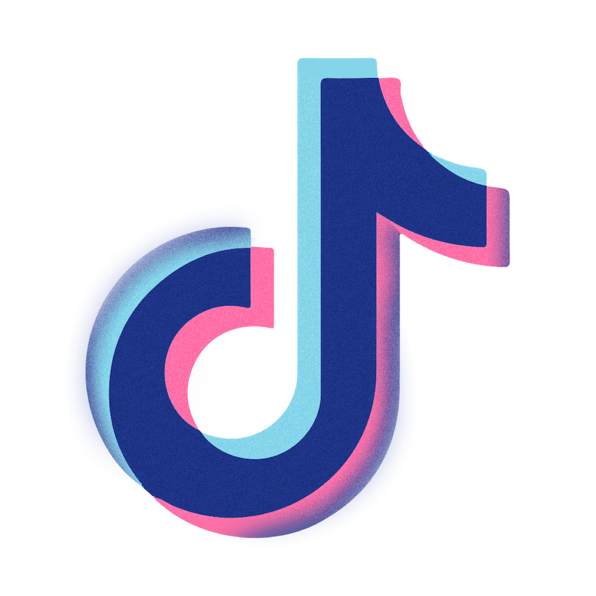

.jpg)
“It was this really intense Christianity. Music was banned. The only music I ever heard was Christian music,” he says.

When Ruiz was eight years old, his older sister was kicked out of the house. He can’t remember all the
specifics, but she wasn’t “following” the church anymore, so their pastor convinced his mom that letting her
go was best. After this, when Ruiz would hang out with his sister, he’d visit her in Simcoe, Ont. and they
would drive around the area together since she wasn’t welcome back home.
One day, on one of their drives in the summer of 2011, ‘Someone Like You’ by Adele came on the radio. Ruiz was enamoured. “From that moment on me and [my sister] would just listen to Adele all the time. She bought me Adele CDs and I’d just sit there and listen like, ‘Who is this woman?’” says Ruiz.
While Adele’s album 21 was Ruiz’s first glimpse at pop culture, it was her following project, 25 that helped him through his teenage years. “I had just started high school when the album came out. It was this big shift for me because I was just starting to explore my sexuality,” says Ruiz.
His lacklustre relationship with his mother also drew him to Adele, especially in high school. His mother was not understanding of his sexuality; she believed it was a ‘sin’, and after Ruiz came out, she was more distant in his life. He believes that it was not only his mom’s Christianity that made it hard for her to understand his sexuality, but also the cultural gap she had to bridge as an immigrant from El Salvador.
“Adele kinda took over the motherly role in my life,” Ruiz explains. “When I was feeling emotions that I didn’t understand, I couldn’t go to my mom, so I would just listen to an Adele album.”
Adele’s persona outside of her music also had a large impact on Ruiz. He would watch her speak in interviews in support of the LGBTQ2IA+ community and read about how she ordained a same-sex marriage in her own backyard.
“I thought that everybody hated gay people and everyone believed it was wrong, except for her,” Ruiz explains. “I literally thought Adele was the only person who didn’t [hate gay people].”
.png)
Ruiz has been in what’s known as a parasocial relationship with Adele for the majority of his life. Parasocial relationships are one-sided bonds that form between fans and their favourite celebrities, internet personalities and even fictional characters. Since the term was first coined in the 1950s, several psychologists have weighed in and conducted studies on the impacts of these relationships, with differing opinions as to whether they are beneficial, harmful or both.
It may be foolish to label all parasocial relations as simply good or bad though. Ruiz, for example, says there have been both healthy and unhealthy elements of his relationship with Adele, just like there would be in any other person-to-person relationship. Because they mostly take place inside a fan’s imagination, parasocial relationships offer more control than other types of interaction.
Tracy Gleason, a professor of psychology at Wellesley College in Massachusetts, researches why young children create imaginary friends. In a 2019 study conducted by Gleason and her colleagues on the connection between childhood imaginary friends and parasocial relationships in adulthood, there was no found link between the two. Despite some common stereotypes that link parasocial relationships to mental illness, Gleason says this isn’t the case. Instead, these relationships are formed as a response to a person’s real-world social life.
Parasocial relationships can be a healthy way to manage social anxiety, especially for younger people. “If you create a parasocial relationship you are never going to get rejected,” Gleason says.
At their best, parasocial relationships have all of the benefits of a real-world relationship without any of the risk or chance of conflict, Gleason adds. In parasocial relationships you can be your true self with someone who you admire and find attractive, and in return, they’ll always find you wonderful to be around.
“You can create the parasocial relationship you want,” says Gleason. “If you want a romantic or sexual relationship, that is what you can imagine. If you want a best friend or a mentor or a big sister, that’s what you create.”
But while these parasocial relationships are on your own terms, they can never be fully under your control because reality can interrupt and create conflict, leading to disappointment and defeat.
In early 2020, Sara Bijelic finally downloaded TikTok. Just weeks later, classes moved online, stores around the country shut down and Ontario entered its first COVID-19 lockdown. With nowhere to go and nobody to interact with, Bijelic, now a fourth-year politics student, stayed in her room, engulfed in TikTok’s algorithm. It showed her some content she was already interested in—anime and comedy sketches—but also sparked brand new obsessions.
“As someone who is a very sociable person, to not have those interactions with people in real life really was a huge detriment to my mental health,” Bijelic explains. “To go on TikTok and follow these content creators and interact with other people in the comments, that gave me comfort.”
She would spend five hours or more on the app each day. Her ‘For You’ page, where TikTok tailors videos based on your anticipated interests, would show her K-pop content as she scrolled. Bijelic was not entirely new to K-pop, having been a “casual listener” throughout high school, but it wasn’t until she downloaded TikTok that she became a fan. It started with just one dance video, but then the app made it so easy for her to lie in bed and scroll for hours on end.

Bijelic became an avid listener of BTS and ATEEZ, but it was the group Stray Kids with whom she started
developing a parasocial relationship. A newer K-pop group, they consist of eight members and mostly produce
electronic pop music. Stray Kids specifically make an effort to connect with their fans by responding to
messages on social media and providing them with a sense of community. It was this aspect of the band that
was so attractive to Bijelic.
Slowly, her love for Stray Kids started to consume her everyday life. “I was consuming all of their content,” she explains. “It came to a point where I was shut in my room all day.” Bijelic stopped responding to texts from her friends altogether and rarely saw her family who she lived with. Stray Kids’ music videos, YouTube compilations and interviews had filled the loneliness in her life.
In December 2021, Stray Kids were set to perform at the Mnet Asian Music Awards, one of the biggest music award ceremonies held in Southeast Asia. That year, the ceremony was held in South Korea and because of the time zones, Bijelic had to stay up until 4 a.m. to watch their performance. It wasn’t until the sun had risen in her hometown of Mississauga, Ont. that she finally went to bed.
The internet allows fans to know more about their favourite celebrities than ever before, and provides them with a higher chance of interacting with them online, says Gleason. “In the past, if you had a parasocial relationship with Jennifer Aniston, she had no idea you existed,” she explains. “Now with some of these YouTube stars and influencers, you can comment on their posts and sometimes they might comment back.”
It’s exactly this chance of interaction that can hurt people in parasocial relationships. In other words, as parasocial relationships become less ‘parasocial,’ they can also reintroduce some conflict and disappointment, according to Gleason. This can happen when fans interact with and learn more about their favourite celebrities.
Bijelic was scrolling through her Instagram feed when she saw other Stray Kids fans accusing member Han Jisung of using a racial slur in a song he wrote before joining the group. Finding this out took a huge toll on her, Bijelic says. She lost control of the parasocial relationship she had with Stray Kids; she was no longer able to view Han as the person she’d imagined him to be. “It hurt me a lot,” she says. “You feel genuinely betrayed, even though you don’t know them personally.”
Han later put out an apology for the song, but Bijelic still took a step back from the group. “You never know if it’s genuine or not. Are you saying this because you still want your fans to be engaged? Or are you actually saying this from the bottom of your heart?” Bijelic asks.
.png)
The alternative to being in denial is what Vinney calls a “parasocial breakup,” where the parasocial bond is severed completely. “That can actually be psychologically very similar to a real break-up,” says Vinney. “There is more control over [parasocial] relationships, but sometimes the real world intrudes. You never entirely control that narrative.”
In late December 2021, Stray Kids released a new song titled, #LoveSTAY, an appreciation song dedicated to their fans. On the track's chorus, members Felix and Bang Chan sing, I will never make you lonely, and you’ll always be beside me, to their fans.
“I’m not going to lie, I did cry a little bit, but it feels like they are talking to you. It feels like it’s their message to us,” Bijelic says.
But she’s still critical of parasocial relationships being marketed towards fans like they’re supposed to be real. She fears that managers and record labels are encouraging and then profiting off of the psychological attachment many young people have towards their favourite performers.
Brands and parasocial relationships go hand in hand, according to Vinney. Froot Loops’ mascot Toucan Sam and Progressive Insurance’s Flo have been staples of those brands for years, and there’s a reason for that. “It’s because people get attached to them and they are more interested in what they are selling because of it,” Vinney explains.
While Bijelic says she’s more guarded now and tries hard to stay detached from celebrities, she is still thankful for Stray Kids and other K-pop groups for filling a hole in her life during the pandemic. “You need to take a step back and recognize what it is at the end of the day, which is just a one-sided relationship,” says Bijelic.
The long-awaited release of ‘30’, Adele’s newest album released in November 2021, has once again marked a new phase in Ruiz’s life. “I just moved to Toronto, I’m starting a new life, I’m living alone,” he says. In the future, when he relistens to ‘30,’ he will be flooded with memories of his first steps into adulthood.
There is a song on ‘30’ called 'Can I Get it' that Ruiz says he hates because he just doesn’t like the way it sounds. In the past if he hadn’t liked an Adele song, he would learn all the words and pretend to like it. But Ruiz has changed over the last decade and so has his relationship with Adele. He can see more of Adele’s flaws today, but still appreciates what she’s added to his life. He can love Adele but also be honest with himself and what he appreciates about her.
“I’m not offending Adele, it’s not like I’m going behind her back. I think that’s just part of getting older,” he says.
While Ruiz has taken a step back from idolising Adele, he still finds comfort in the pop star’s persona—which is something he’s not interested in saying goodbye to anytime soon.
Ruiz would love to one day meet Adele and tell her what she has done for him, how she has been a motherly figure in his life and helped him through his hardest moments. “It would give me solace knowing she knows, even if she’s not going to remember it, even though there are 18,000 other times that she’s heard that a gay kid felt safe in her music; I would still want her to know.”